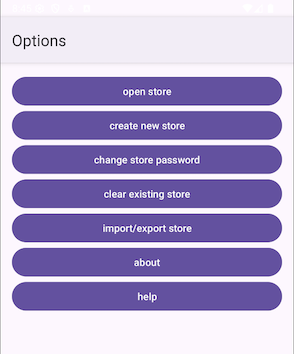
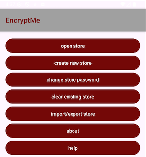

This file is maintained as the project progresses. The most recent entry is at the top of this file, the oldest at the bottom. This is how a blog works, I think.
The project sources can be found on GitHub: https://github.com/jplatipus/goodViberations
The data layer functionality can't be tested easily without having unit tests: the app must be run, and the activities that load, save, edit and delete entries would need to be run. For this reason unit tests have been specified in the DataLayerUnitTests.html file. It is ready to be run in Gemini.
The implementation loads and saves the list of entries in an xml file. This will be used for
import and export store too, but specifying a filename instead of the DataLayer persisting in
context.filesDir, generating a filename of the form "info" + ddmmyyyyhhmmss + ".xml".
Some refactoring will be necessary at later date to handle the import and export store in the DataLayer.
A prompt is issued to check that the DataLayer class is OK, and to generate the unit tests:
I have specified unit tests in @DataLayerUnitTests.html for the DataLayer class specified
in @DataLayer.html . Could you check if the DataLayeer class needs to be modified,
and also generate the unit tests please.
Some snags were encountered. The gradle file build.gradle.kts(app) refers to an old robolectric library that does not support Android sdk 36. A quick check on the roboelectric github points to a newer version. The gradle file is updated, and the build is synced. Rebuilding the project should works, but some unit test errors are occurring.
The unit tests fail on saveStoreTest, this is because an attempt is made to save the file twice in a second thus overwriting the previous file, when it should be a new file. This has identified a bug in the spec for the data layer! The specification for createStore in DataLayer specification. has been updated to include a random number between 0 and 100. Unit tests now all pass. One snag is that sometimes Gemini changes the annotation in DataLayerUnitTests.kt from @Config(sdk = [36]) to @Config(sdk = [34]) which causes the unit test runner to fail with long and gryptic error messages. For now the error message is recognised by me, and the unit test file annotation updated. It is hoped that Gemini won't change build.gradle.kts(app) in the future. The line that specifies which version of robolectric to use was manually specified as testImplementation("org.robolectric:robolectric:4.16"), this one works with the Android SDK 36: testImplementation("org.robolectric:robolectric:4.16")
The methods in the DataLayer have been updated to take a map instead of a list. This ensures that
the name used for an entry is unique. The following prompt is issued to generate the updated code:
I have updated @DataLayer.html and @DataLayerUnitTests.html
Attempting to run the unit tests, gives the error Requires newer sdk version #36 (current version is #34).
This is because Gemini has changed the line in DataLayerUnitTests to @Config(sdk = [36]). The line
is manually set to be @Config(sdk = [36]). Some way of telling Gemini to leave the sdk version alone
needs to be found. The following prompt is issued to inform Gemini of the changes I made:
I have updated @build.gradle.kts to use
org.robolectric:robolectric:4.16.
This means that @DataLayerUnitTests.kt can now use Android SDK 36
The unit tests now pass.
|
 Material 3 default colours  Colours chosen for the app |
The UI is very poor and needs to be improved.
The code does not use the latest "material design 3",
The following prompt is issued so that the agent can update the code to use the latest version:
The activity looks better now: This is not a friendly way to behave. |
Work has started on adding more details to the DataLayer specification. The Android documentation has a section on app specific files: where they are kept, how they can be accessed, and importantly, best practises.
It is recommended not to open and close files too often.
The approach is to minimise reads and writes, and also to only write to a file once. In previous versions of Android, problems have been encountered when appending contents to a file, possibly due to caching. The hope is that only writing to a file once will avoid data loss.
If there arises a subsequent need to add more fields to an existing file, a new file is created instead, with the updated list of fields. The filename is made up of "info" + ddmmyyyyhhmmss.xml, and no more than 5 files are kept (4 backups + the latest version).
At present the specification defines a persistence class called DataLayer. Once the specification is completed, work can move on to the main activity button functionalities that have not been addressed so far.
I am now working on tag v5.0.
There are a lot of activities in this project, quite a few are expected to perform many operations.
It has been decided to create one functionality specification html file per activity. The
functionality specification files are placed in a folder called functionality. As the project
progresses, activity by activity, new functionality files are added. The UI specifications are
moved across from UIActivities.html to their new functionality
specification file.
The following is to be carried out:
I have issued some prompts to Gemini:
I have updated specification files: @UIActivities.html @Functionality.html
@MainActivityFunctionality.html @AboutActivityFunctionality.html @HelpActivityFunctionality.html
I have also updated the classes source code: @AddEntryActivity.kt @AboutActivity.kt @ChangeStorePasswordActivity.kt @CreateNewStoreActivity.kt @DeleteEntryActivity.kt @EditEntryActivity.kt @HelpActivity.kt
@ImportExportStoreActivity.kt @ListEntriesActivity.kt @MainActivity.kt @OpenStoreActivity.kt
the plan should specify that the asset filename @MainActivityHelp.html is passed to
@HelpActivity.kt by @MainActivity.kt
Issuing the above prompts in the Ask tab of the Gemini chat caused Gemini to
say it was making
the changes but it did nothing.
Issuing the same prompts again in the Agent tab did cause Gemini
to make code changes. It is adding more functionality than I expected. It has updated all the activities'
help and back buttons too. I like what it did, I was planning to add the help and back button
functionality in the specs for the other activities later, Gemini decided to do it now. It did
not update AndroidManifest.xml, so I asked the agent a question:
does @AndroidManifest.xml need to list every activity in the app?
The agent duly replied yes to the question and updated the manifest.
The app compiles, it also runs well, the navigation from the MainActivity to the AboutActivity and HelpActivity works. The back button in these activities also works. The UI is not pretty, and needs attention.
I am now working on tag v4.0.
The following is to be carried out:
The agent's context has been cleared. I intend generate to code again from the specs.
At this point I believe that everything intended for this build is now in place. It is time to ask the agent to perform the changes.
The agent generated the UI code but did not add appcompat = "1.7.1". I asked Gemini to do this,
it claimed to have updated my gradle files, but it did not. So I did it manually
Adding the appcompat resolves the compilation errors.
I noticed that there is no code to generate a preview of each UI class. I asked Gemini to do this,
but it did not. Gemini listed the code that it claimed to have added:
@Preview(showBackground = true, name = "About Activity Preview")
@Composable
fun AboutActivityPreview() {
// This Composable wraps the XML layout for previewing.
AndroidView(
factory = { context ->
// Inflate the XML layout using the activity's context.
android.view.View.inflate(context, R.layout.activity_about, null)
},
update = { view ->
// You can add logic here to update the view in the preview if needed.
// For example, finding a button and setting its text.
}
But it didn't do it. I had to manually add this to each UI activity. Then I found that the XML layouts
did not have the widget IDs specified. I asked Gemini to fix this: